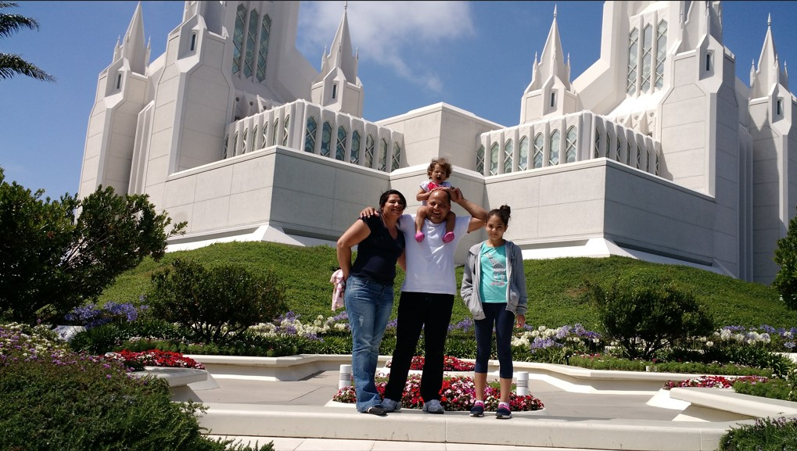

About Me

Valdir Felix dos Santos
Hello everybody!
I am a Brazilian student, and my wife and I have tree children, one boy and two daughters. We live in a small
city called Araras, state of São Paulo, Brazil.
I have a brasilian major in business administration, and I work as a logistic and planning coordinator.
My first major opition at BYU was Business Management, however I
decided to change at Software Development major. For many years I carried with me the curiosity and will
to know how does software and computer programs works. And now I made the decision to know put hands on.
In my free time I like to fish, watch movies and go at the beach with my family!
This is a litle bit about me!